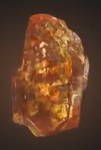
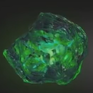
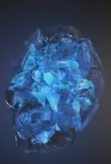
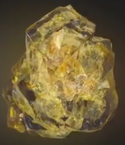
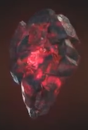
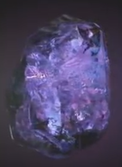

| Name | Color | Powers and capabilities | Image |
|---|---|---|---|
| Soul | Orange | Allows the user to steal, control, manipulate, and alter living and dead souls. The soul Gem also acts as a gateway to an idylic pocket universe. At full potential, when backed by the Power Gem, the Soul Gem grants the user controll over all life in the universe. |  |
| Time | Green | Allows the user to see into the past and the future; stop, slow down, speed up or reverse the flow of time; travel throu tivel change the past and the futur; age and de-age beings, and trap people or entire universe in unending loops of time. At full potential, when backed by the Power Gem, the Time Gem grants the user omniscience and total contol over the past present, and future. |  |
| Space | Blue | Allows the user to exist in any location; move any objects anywhere thtought reality; warp ore rearrage space; teleport themselves and other; increase their speed, and alter the distance beetween objects contrary to the laws of physics. At full potential, when backed by the Power Gem, the Space Gem grants the user omnipresence. |  |
| Mind | Yellow | Allows the user to enhance their mental and psionic abilities and acces the throughts and dreams of other beings. At full potential, when backed by the Power Gem, the Mind Gem can access all minds in existence simultaneously. The Mind Gem is also the minifestation of the universal subconscious. |  |
| Reality | Red | Allows the user to fulfill their wishes, even if the wish is in derect contradiction with scientific laws, and do things that would normally be inpossible. At full potential, when backed by the other five Gems, the Reality Gem allows the user toalter reality on universal scale and also create any type of alternate reality the user wishes. |  |
| Power | Purple | Allows the user to access and manipulate all forms of energt; enhance their physical strength and durabilityl enhance any superhuman abilityl and boost the effects of the other five Gems. At full potential, the Power Gem grants the user omnipotence |  |
| marvelcinematicuniverse.fandom.com/wiki/Infinity_Stones | |||